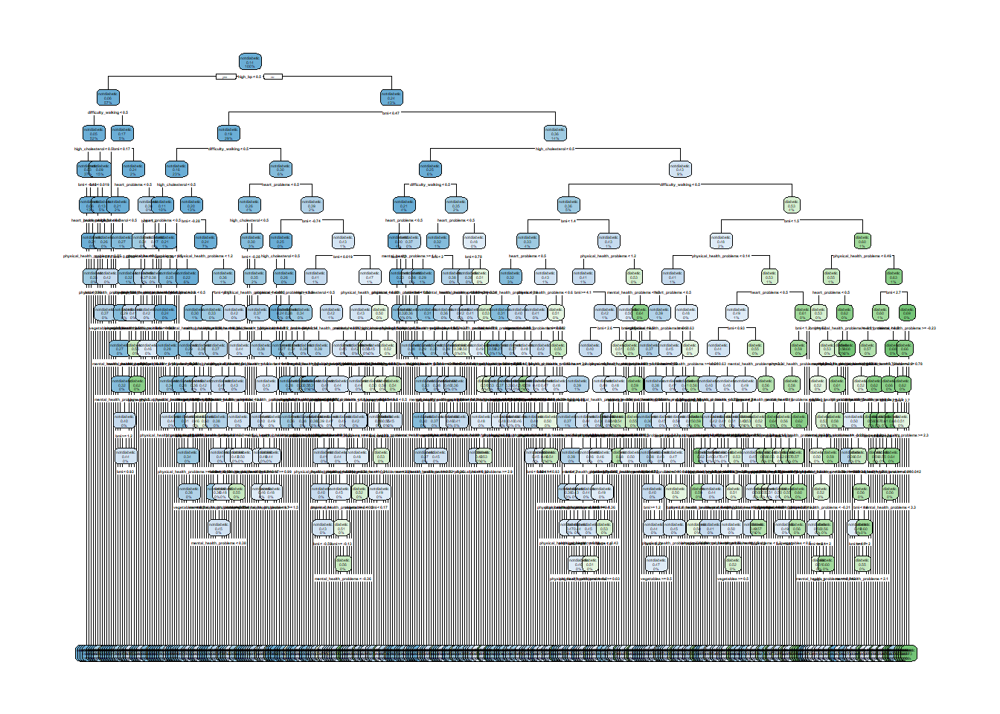

This is the continuation of the project introduced in EDA.qmd.
Contents
There are six components to this project.
EDA - quarto file with EDA (this file)
Modeling - quarto file to select the best model using tidymodels
API - R file fitting the model and defining API structure
Dockerfile - for building the Docker image
.tar - Docker image
Demo - video showing me demonstrating my Docker container
Libraries and loads
For rendering, I need to reload libraries. Also, I’m just sharing my data frame from the EDA file and loading it here, rather than redoing the EDA code.
library(tidyverse)
── Attaching core tidyverse packages ──────────────────────── tidyverse 2.0.0 ──
✔ dplyr 1.1.4 ✔ readr 2.1.5
✔ forcats 1.0.0 ✔ stringr 1.5.1
✔ ggplot2 3.5.1 ✔ tibble 3.2.1
✔ lubridate 1.9.3 ✔ tidyr 1.3.1
✔ purrr 1.0.2
── Conflicts ────────────────────────────────────────── tidyverse_conflicts() ──
✖ dplyr::filter() masks stats::filter()
✖ dplyr::lag() masks stats::lag()
ℹ Use the conflicted package (<http://conflicted.r-lib.org/>) to force all conflicts to become errors
library(tidymodels)
Warning: package 'tidymodels' was built under R version 4.4.2
This Quarto file continues into the Modeling step. We need to make a training/test split (70/30) and include a seed. We will predict the diabetes response variable using different models via tidymodels, evaluating with 5CV log-loss as metric. I’m not stratifying the split.
Data split
I’m using a 70% split for a training subset of the data. Here, I’m also specifying the seed as 1.
set.seed(1)#for debugging#data = filter(data,row_number()<=200)split <-initial_split(data, prop =0.7)train <-training(split)test <-testing(split)train_5cv <-vfold_cv(train, 5)#adding another copy for a first, smaller pass to find interesting variables for full modelingfirst_data <-sample_n(data, 20000)#first_data <- sample_n(data, 200) #debug onlyfirst_split <-initial_split(first_data, prop =0.7)first_train <-training(first_split)first_test <-testing(first_split)first_train_5cv <-vfold_cv(first_train, 5)
Classification Tree
The first model type used here is a classification tree. As the tree builds, at each level the best (per our metric) predictor and its value are used to separate into two subsequent branches of the tree: is x > 0.5? Yes - path A; No - path B. Then recursively the same occurs at each subsequent branch, up to some number of levels of the tree. This is not an optimal solution, as it can be influenced significantly by the data grabbed in the training set, but it is fairly intuitive to interpret as a series of sequential yes/no decisions that land either on a success or failure (most prevalent for training data) at the bottom of the tree.
We will tune the number of levels and any other tunable parameters, using 5Fold CV as mentioned earlier.
Recipe definition
Not much needs to happen here, aside from creating numerous dummy variables. I will also normalize my few numeric variables. I will start first with a 21 predictor set for a subset (20000), to attempt to see the predictive strength of each input. Then, I’ll choose some smaller number of the more interesting variables to use for the rest of the work (including a re-evaluation of this model).
#first, adjustingfirst_recipe <-recipe(Diabetes_binary ~ ., data = first_train) |>#normalize numericsstep_normalize(all_numeric(),-all_outcomes() ) |>#dummy vars for categorical itemsstep_dummy(all_factor_predictors() )first_peek <-head(first_recipe|>prep()|>bake(head(first_train)))
Model tuning
Now, defining the model characteristics, workflow, and tuning.
Wow, it is so frustrating to get all the syntax just right to work, in practice! At least this chart is clear in direction! I want to study the more important variables, such as those in the top 10 here. I’ll choose some of the top and one or two low-importance items that I had expected to relate strongly. These need renaming, too.
#overwriting recipe with reference to full scale training datasetrecipe <-recipe(Diabetes_binary ~ ., data = train) |>#stripping out many columns - step_rm NOT step_selectstep_rm( CholCheck, Smoker, Stroke, PhysActivity, Fruits, HvyAlcoholConsump, AnyHealthcare, NoDocbcCost, GenHlth, Sex, Age, Education, Income ) |>#normalize numericsstep_normalize(all_numeric(),-all_outcomes() ) |>#dummy vars for categorical itemsstep_dummy(all_factor_predictors() ) |>#rename attempt here, dont touch outcomestep_rename(high_bp = HighBP_high.blood.pressure,bmi = BMI,difficulty_walking = DiffWalk_walking.difficulty,high_cholesterol = HighChol_high.cholesterol,heart_problems = HeartDiseaseorAttack_heart.problems.CHD.MI,vegetables = Veggies_vegetables,physical_health_problems = PhysHlth,mental_health_problems = MentHlth )#checking results look okpeek <-head(recipe|>prep()|>bake(head(train)))peek
Looks ok! Now, let’s build the proper classification tree model with 5Fold CV on our proper training samples.
Full model tuning
#modelmodel_classtree <-decision_tree(tree_depth =tune(),min_n =tune(),cost_complexity =tune() ) |>set_engine("rpart") |>set_mode("classification")#workflowworkflow_classtree <-workflow() |>add_recipe(recipe) |>add_model(model_classtree)#grid configgrid_classtree <-grid_regular(cost_complexity(),tree_depth(c(2,15)), #min of 2 seems more sensiblemin_n(c(10,100)), #I dont want min_n 2 as minimum for this giant datasetlevels =c(3, 3, 3) )#tuning setuptune_grid_classtree <- workflow_classtree |>tune_grid(resamples = train_5cv,grid = grid_classtree,metrics =metric_set(mn_log_loss) )tune_classtree <- tune_grid_classtree |>select_best(metric ="mn_log_loss")workflow_classtree <- workflow_classtree |>finalize_workflow(tune_classtree)fit_classtree <- workflow_classtree |>fit(train)fit_classtree |>extract_fit_engine() |> rpart.plot::rpart.plot(roundint=FALSE)
Warning: labs do not fit even at cex 0.15, there may be some overplotting

A pretty tree, though completely unreadable. The best tree_depth is around 8-15, based on various tuning runs.
Random Forest
Now, let’s explore the random forest model family and find its best contender fit.
This family makes an ensemble of special trees and finds the average across them. As a regular classification tree is over-impacted by small changes to its training data, random forest models implement bootstrapping and further a random subset of predictors to create its ensemble. Bootstrapping, or creating new samples by selecting from the training data with replacement, helps to avoid the susceptibility to high variance driven by training selections; as we create a set of these, the average has lower variance overall. And the second adjustment is a random selection of predictor inputs, which helps decrease variance and identify possible better fits by minimizing oversized impact due to strong predictors. Again, by creating an ensemble group of models, we can average the results to find a model that will generally have lower variance than the weaker single tree method.
Full model tuning
Having already done my first pass to decide on interesting predictors, as part of the first model section, here I am conducting only a standard tuning process. Again, I’m tuning all possible variables, because I have such little experience.
#model definitionmodel_randomforest <-rand_forest(mtry =tune(),trees =tune(),min_n =tune() ) |>set_engine("ranger",importance="impurity") |>set_mode("classification")#workflow using same prior model recipeworkflow_randomforest <-workflow() |>add_recipe(recipe) |>add_model(model_randomforest)#tuning prepgrid_randomforest <-grid_regular(mtry(c(2,6)), #choosing min over 1 and max less than fulltrees(c(100,2000)), #some variation but not too lowmin_n(c(10,100)), #I dont want min_n 2 as minimum for this giant datasetlevels =c(2, 3, 2) )#run tuningtune_grid_randomforest <- workflow_randomforest |>tune_grid(resamples = train_5cv,grid=grid_randomforest,metrics =metric_set(mn_log_loss) )
Warning: package 'ranger' was built under R version 4.4.2
#save best tuning per log-losstune_randomforest <- tune_grid_randomforest |>select_best(metric="mn_log_loss")workflow_randomforest <- workflow_randomforest |>finalize_workflow(tune_randomforest)#fit on full training datafit_randomforest <- workflow_randomforest |>fit(train)
Model selection
Now, let’s compare the error of both models against our holdout test data and identify our best option!